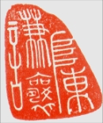
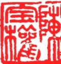

The Chinese chop combines the Chinese ideograms that are cast into stones and are often stylized to fit within the arbitrary shapes of the stones. The Chinese ideogram is essentially an image, or more accurately, a cluster of images, before being a concept. Each Chinese ideogram is potentially a metaphor (evidenced in I Ching). These 'texts' have their origin in shamanic traditions of the second millennium B.C. and they have been cast in written form at the beginning of the first millennium B.C., which further had themselves evolved out of the scripts carved on tortoise shells and ox scapulas (Shang Dynasty, 16th to 11th century B. C.), known as Oracle Inscriptions, which are considered to be the earliest written language of China.
Here displays two of Heather's Chop works on stones using a
style called Zhuan.
|  | Chop on a random shaped
stone. |
|  | Chop on a square stone (for Baoquan Chen). |